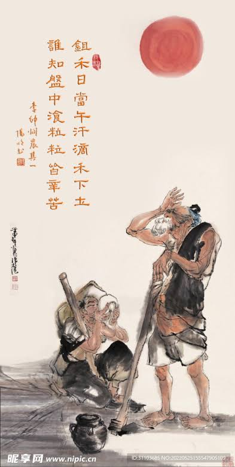

悯农 (Mǐn nóng) - สงสารชาวนา

ผู้แต่ง: หลี่เซิน (李绅 - Li Shen) | ราชวงศ์: ถัง (Tang Dynasty)
เนื้อความบทกวี: 锄禾日当午， (Chú hé rì dāng wǔ) 汗滴禾下土。 (Hàn dī hé xià tǔ) 谁知盘中餐， (Shéi zhī pán zhōng cān) 粒粒皆辛苦。 (Lì lì jiē xīn kǔ
คำแปลภาษาไทย: ใช้จอบพรวนดินปลูกข้าวในยามเที่ยงวันอันร้อนระอุหยาดเหงื่อหยดลงบนผืนดินใต้ต้นข้าวจะมีใครบ้างไหมที่ตระหนักรู้ว่าอาหารในจานแต่ละมื้อนั้นข้าวทุก ๆ เมล็ดล้วนแลกมาด้วยความยากลำบากขมขื่น
ความเป็นมา: หลี่เซินแต่งบทกวีนี้เพื่อสะท้อนชีวิตอันยากลำบากของเกษตรกรรากหญ้าในสมัยราชวงศ์ถัง ที่ต้องทำงานหนักท่ามกลางแดดร้อนเพื่อส่งภาษีและเลี้ยงดูผู้คนในเมือง แต่กลับได้รับการเหลียวแลน้อยที่สุด
จุดเด่นทางวรรณศิลป์: เป็นบทกวีแนวเพื่อชีวิตและสัจนิยม (Realism) ที่ทรงพลังมาก ใช้คำศัพท์ที่ง่ายและตรงไปตรงมา ภาพของ "เหงื่อที่หยดลงดิน" ตัดกับภาพ "อาหารในจานข้าวมื้อหรู" ของชนชั้นสูง บทกวีนี้มักใช้ในการสั่งสอนเด็กๆ และผู้คนให้รู้คุณค่าของอาหาร และไม่กินทิ้งกินขว้าง